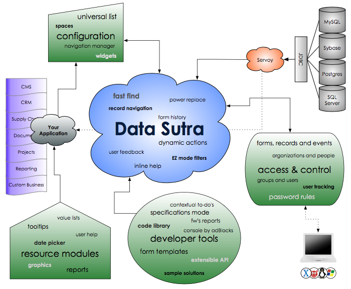
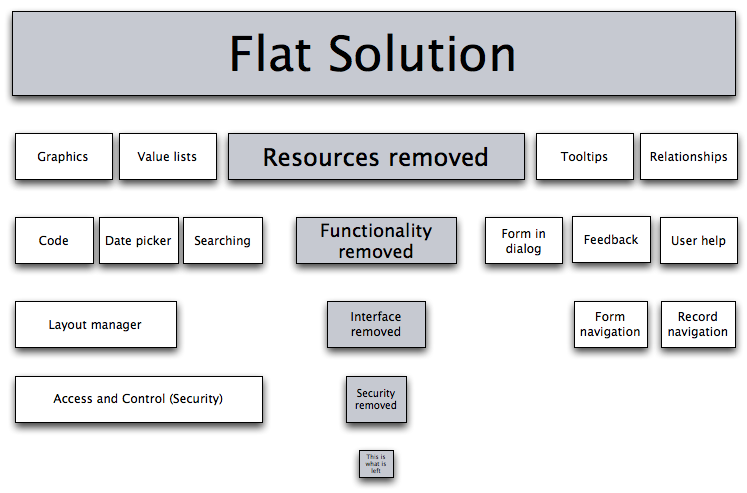

Philosophy

Data Sutra is a complete business application management platform for Servoy. It provides structure, organization, functionality & GUI for your Servoy solutions. And it has been honed and tested against many projects, developers and clients.
Value to you?
- Code right the first time
- Minimize unforeseen hurdles
- Focus on just building your workflows

Goals
- Adhere to DRY principles
- Make things easier for the developer, not harder
- Greatly accelerate writing business applications
- Bring cutting edge client techniques to the average developer
Concepts
Separation of the GUI, solution and business layers
- untangle your solutions
- reusable resources
- multi developer friendly
- code readable
- manage large solutions
Meta-data driven
- de-couple functionality from code
- configure new projects fast
- projects grow without spaghetti code
Standardized GUI
- build good looking forms fast
- pre-defined styles for all Servoy objects
- consistent UX across all of your views
- win your users over
- easy user learning curve
- latest web client usability
Starter templates for a variety of workflows
- build forms even faster
- utilize establish data organization patterns
Organization
API and naming conventions
- find things easily
- conform to conventions
API details: API
Clearly defined module dependencies, interactions, and extensibility
- DRY (don’t repeat yourself)
- separate functionality into modules knowing you won’t create headaches for yourself later on
Included functionality
Layout manager
- main panes: navigation, universal list and workflow
- spaces: users can change the layout to focus on various panes
- toolbars: solution-wide widgets
- sidebars: solution-wide workflow forms
- controls: add, actions, filters, reports, and transactions button groups
Full details: Layout Manager
Flexible and powerful navigation engine
- set up and modify application workflows fast
- control user views
- combine many applications into workspaces
- navigation is not a bottleneck for growing your solution
Universal Lists
- configure powerful lists with no coding
- assign multiple lists to views
Fast Find
- less confusing than Servoy’s default find mode for users
- always in the same place
- completely configurable with no coding necessary for each form
- covers 90% of all searching needs right out of the box
Find and Replace
- update data across many records
- configurable: no coding
- restrict to only those with access
Filters
- setup powerful filters with no coding
- static filtering by values
- dynamic filtering by logic (assign a method as the filter input)
Reporting
- custom pdf report web viewer: view, resize, print, download, etc.
- api’s to easily convert any report to a pdf
- configuration pane to organize your reports
- assign reports to any view
Full details: Reporting
Access and Control
- 3-tier restriction plan: views, records and functionality. Assign what a user can see, what records they have access to, and what they can do while there.
- SaaS deployment capability with organization and user abstraction
- bank-level password controls
- connection to external users store
- logging of all user actions
- realtime session monitoring
- login widget to include on external websites
- data encrypted from point to point via HTTPS
- login preferences
Solution configuration
- branding
- various overall preferences
Registries
- organizations and users
- tooltips
- value lists
- i18n
- applications